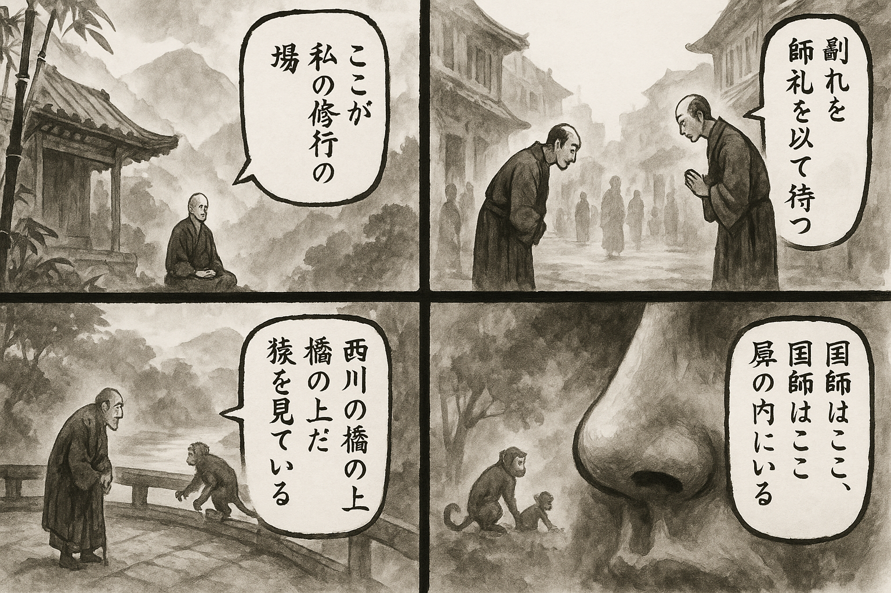

七十五巻 巻一覧
正法眼藏第73 他心通
本ページの導入・語彙・深掘り・クイズは tools/regen_volume_intro_from_corpus.py が OpenAI API で生成したものです（入力は当巻冒頭原文の抜粋）。内容はモデル出力のため、重要箇所は必ず原文・教本と照合してください。
出典: https://shomonji.or.jp/zazen/doc/genzou.html
（ローカル生成の全文: 全文ページ）
この巻の位置（導入）
西京光宅寺慧忠國師は越州諸曁の人で、姓は冉氏です。自受心印を受けてから南陽白崖山黨子谷に四十年以上住んでおり、山門を下らずに道行が帝里に聞こえています。
唐の肅宗の上元二年に、詔を賚せて京に赴くように命じられ、千福寺西禪院に居ることになりました。代宗の臨御の際には、再び光宅の精藍に迎えられ、十六年間、随機説法を行いました。
語彙の足場
- 他心通：他人の心を知る能力を指し、仏教において特に重要視される超能力の一つ。
- 心印：仏教において、心の本質を理解し、真理を受け取る印を意味する。
- 道行：仏教の教えに従った生活や修行の実践を指す。
- 禪院：禅宗の修行を行う場所で、僧侶が集まり、教えを学ぶ場を意味する。
本文（冒頭・抜粋）
出典はリポジトリ内 doc/正法眼蔵.txt です。原文の参照元: https://shomonji.or.jp/zazen/doc/genzou.html
西京光宅寺慧忠國師者、越州諸曁人也。姓冉氏。自受心印、居南陽白崖山黨子谷、四十餘祀。不下山門、道行聞于帝里。唐肅宗上元二年、敕中使孫朝進賚詔徴赴京。待以師禮。敕居千福寺西禪院。及代宗臨御、復迎止光宅精藍、十有六載、隨機説法。時有西天大耳三藏、到京。云得他心慧眼。帝敕令與國師試驗（西京光宅寺慧忠國師は、越州諸曁の人なり。姓は冉氏なり。心印を受けしより、南陽白崖山黨子谷に居すこと四十餘祀なり。山門を下らず、道行帝里に聞ゆ。唐の肅宗の上元二年、中使孫朝進に敕して、詔を賚せて赴京を徴す。待つに師禮を以てす。敕して千福寺の西禪院に居せしむ。代宗の臨御に及んで、復た光宅の精藍に迎止すること十有六載、隨機説法す。時に西天の大耳三藏といふものありて到京せり。他心慧眼を得たりと云ふ。帝、敕して國師と試驗せしむ）。
三藏才見師便禮拜、立于右邊（三藏才に師を見て、便ち禮拜して右邊に立つ）。
師問曰、汝得他心通耶（汝他心通を得たりや）。
對曰、不敢。
師曰、汝道、老僧卽今在什麼處（汝道ふべし、老僧卽今什麼處にか在る）。
三藏曰、和尚是一國之師、何得却去西川看競渡（和尚は是れ一國の師なり、何ぞ西川に却去いて競渡を看ることを得んや）。
師再問、老僧卽今在什麼處（汝道ふべし、老僧卽今什麼處にか在る）。
三藏曰、和尚是一國之師、何得却在天津橋上、看弄猢猻（和尚は是れ一國の師なり、何ぞ天津橋の上に在つて、猢猻を弄するを看ることを得んや）。
師第三問、老僧卽今在什麼處（汝道ふべし、老僧卽今什麼處にか在る）。
三藏良久、罔知去處（三藏良久して去處を知ること罔し）。
師曰、遮野狐精、他心通在什麼處（遮の野狐精、他心通什麼處にか在る）。
三藏無對（三藏無對なり）。
僧問趙州曰、大耳三藏、第三度、不見國師在處、未審、國師在什麼處（僧、趙州に問うて曰く、大耳三藏、第三度、國師の在處を見ず、未審、國師什麼處にか在る）。
趙州云、在三藏鼻孔上（三藏が鼻孔上に在り）。
僧問玄沙、既在鼻孔上、爲什麼不見（僧、玄沙に問ふ、既に鼻孔上に在り、什麼と爲てか見ざる）。
玄沙云、只爲太近（只だ太だ近きが爲なり）。
僧問仰山曰、大耳三藏、第三度、爲什麼、不見國師（僧、仰山に問うて曰く、大耳三藏、第三度、什麼と爲てか國師を見ざる）。
仰山曰、前兩度是渉境心、後入自受用三昧、所以不見（前の兩度は是れ渉境心なり、後には自受用三昧に入る、所以に見ず）。
海會端曰、國師若在三藏鼻孔上、有什麼難見。殊不知、國師在三藏眼睛裏（國師若し三藏が鼻孔上に在らば、什麼の難見か有らん。殊に知らず、國師、三藏の眼睛裏に在ることを）。
玄沙徴三藏曰、汝道、前兩度還見麼（玄沙、三藏を徴して曰く、汝道ふべし、前の兩度、還た見る麼）。
雪竇明覺重顯禪師曰、敗也、敗也。
大證國師の大耳三藏を試驗せし因緣、ふるくより下語し道著する臭拳頭おほしといへども、ことに五位の老拳頭あり。しかあれども、この五位の尊宿、おのおの諦當甚諦當はなきにあらず、國師の行履を覰見せざるところおほし。ゆゑいかんとなれば、古今の諸員みなおもはく、前兩度は三藏あやまらず國師の在處をしれりとおもへり。これすなはち古先のおほきなる不是なり、晩進しらずはあるべからず。
いま五位の尊宿を疑著すること兩般あり。一者いはく、國師の三藏を試驗する本意をしらず。二者いはく、國師の身心をしらず。
しばらく國師の三藏を試驗する本意をしらずといふは、第一番に、國師いはく、汝道、老僧卽今在什麼處といふ本意は、三藏もし佛法を見聞する眼睛なりやと試問するなり。三藏おのづから佛法の他心通ありやと試問するなり。當時もし三藏に佛法あらば、老僧卽今在什麼處としめされんとき、出身のみちあるべし、親曾の便宜あらしめん。いはゆる國師道の老僧卽今在什麼處は、作麼生是老僧と問著せんがごとし。老僧卽今在什麼處は、卽今是什麼時節と問著するなり。在什麼處は、這裏是什麼處在と道著するなり。喚什麼作老僧の道理あり。國師かならずしも老僧にあらず、老僧かならず拳頭なり。大耳三藏、はるかに西天よりきたれりといへども、このこころをしらざることは、佛道を學せざるによりてなり、いたづらに外道二乘のみちをのみまなべるによりてなり。
國師かさねてとふ、汝道、老僧卽今在什麼處。ここに三藏さらにいたづらのことばをたてまつる。
國師かさねてとふ、汝道、老僧卽今在什麼處。ときに三藏ややひさしくあれども、茫然として祗對なし。國師ときに三藏を叱していはく、這野狐精、他心通在什麼處。かくのごとく叱せらるといへども、三藏なほいふことなし、祗對せず、通路なし。
しかあるを、古先みなおもはくは、國師の三藏を叱すること、前兩度は國師の所在をしれり、第三度のみしらず、みざるがゆゑに、國師に叱せらるとおもふ。これおほきなるあやまりなり。國師の三藏を叱することは、おほよそ三藏はじめより佛法也未夢見在なるを叱するなり。前兩度はしれりといへども、第三度をしらざると叱するにあらざるなり。おほよそ他心通をえたりと自稱しながら、他心通をしらざることを叱するなり。
國師まづ佛法に他心通ありやと問著し試驗するなり。すでに不敢といひて、ありときこゆ。そののち、國師おもはく、たとひ佛法に他心通ありといひて、他心通を佛法にあらしめば恁麼なるべし。道處もし擧處なくは、佛法なるべからずとおもへり。三藏たとひ第三度わづかにいふところありとも、前兩度のごとくあらば道處あるにあらず、摠じて叱すべきなり。いま國師三度こころみに問著することは、三藏もし國師の問著をきくことをうるやと、たびたびかさねて三番の問著あるなり。
二者いはく、國師の身心をしれる古先なし。いはゆる國師の身心は、三藏法師のたやすく見及すべきにあらず、知及すべきにあらず。十聖三賢およばず、補處等覺のあきらむるところにあらず。三藏學者の凡夫なる、いかでか國師の渾身をしらん。
この道理、かならず一定すべし。國師の身心は三藏の學者しるべし、みるべしといふは謗佛法なり。經論師と齊肩なるべしと認ずるは狂顚のはなはだしきなり。他心通をえたらんともがら、國師の在處しるべしと學することなかれ。
他心通は、西天竺國の土俗として、これを修得するともがら、ままにあり。發菩提心によらず、大乘の正見によらず。他心通をえたるともがら、他心通のちからにて佛法を證究せる勝躅、いまだかつてきかざるところなり。他心通を修得してのちにも、さらに凡夫のごとく發心し修行せば、おのづから佛道に證入すべし。ただ他心通のちからをもて佛道を知見することをえば、先聖みなまづ他心通を修得して、そのちからをもて佛果をしるべきなり。しかあること、千佛萬祖の出世にもいまだあらざるなり。すでに佛祖の道をしることあたはざらんは、なににかはせん。佛道に不中用なりといふべし。他心通をえたるも、他心通をえざる凡夫も、ただひとしかるべし。佛性を保任せんことは、他心通も凡夫もおなじかるべきなり。學佛のともがら、外道二乘の五通六通を、凡夫よりもすぐれたりとおもふことなかれ。ただ道心あり、佛法を學せんものは、五通六通よりもすぐれたるべし。頻伽の卵にある聲、まさに衆鳥にすぐれたるがごとし。いはんやいま西天に他心通といふは、他念通といひぬべし。念起はいささか緣ずといへども、未念は茫然なり、わらふべし。いかにいはんや心かならずしも念にあらず、念かならずしも心にあらず。心の念ならんとき、他心通しるべからず。念の心ならんとき、他心通しるべからず。
しかあればすなはち、西天の五通六通、このくにの薙草修田にもおよぶべからず。都無所用なり。かるがゆゑに、震旦國より東には、先徳みな五通六通をこのみ修せず、その要なきによりてなり。尺璧はなほ要なるべし、五六通は要にあらず。尺璧はなほ寶にあらず、寸陰これ要樞なり。五六通、たれの寸陰をおもくせん人かこれを修習せん。おほよそ他心通のちから、佛智の邊際におよぶべからざる道理、よくよく決定すべし。しかあるを、五位の尊宿、ともに三藏さきの兩度は國師の所在をしれりとおもへる、もともあやまれるなり。國師は佛祖なり、三藏は凡夫なり。いかでか相見の論にもおよばん。
國師まづいはく、汝道、老僧卽今在什麼處。
この問、かくれたるところなし、あらはれたる道處あり。三藏のしらざらんはとがにあらず、五位の尊宿のきかずみざるはあやまりなり。すでに國師いはく、老僧卽今在什麼處とあり。さらに汝道、老僧心卽今在什麼處といはず。老僧念卽今在什麼處といはず。もともききしり、みとがむべき道處なり。しかあるを、しらずみず、國師の道處をきかずみず。かるがゆゑに、國師の身心をしらざるなり。道處あるを國師とせるがゆゑに、もし道處なきは國師なるべからざるがゆゑに。いはんや國師の身心は、大小にあらず、自他にあらざること、しるべからず。頂𩕳あること、鼻孔あること、わすれたるがごとし。國師たとひ行李ひまなくとも、いかでか作佛を圖せん。かるがゆゑに、佛を拈じて相待すべからず。
國師すでに佛法の身心あり、神通修證をもて測度すべからず。絶慮忘緣を擧して擬議すべからず。商量不商量のあたれるところにあらざるべし。國師は有佛性にあらず、無佛性にあらず、虛空身にあらず。かくのごとくの國師の身心、すべてしらざるところなり。いま曹谿の會下には、靑原、南嶽のほかは、わづかに大證國師、その佛祖なり。いま五位の尊宿、おなじく勘破すべし。
趙州いはく、國師は三藏の鼻孔上にあるがゆゑにみずといふ。この道處、そのいひなし。國師なにとしてか三藏の鼻孔上にあらん。三藏いまだ鼻孔あらず、もし三藏に鼻孔ありとゆるさば、國師かへりて三藏をみるべし。國師の三藏をみること、たとひゆるすとも、ただこれ鼻孔對鼻孔なるべし。三藏さらに國師と相見すべからず。
玄沙いはく、只爲太近。
まことに太近はさもあらばあれ、あたりにはいまだあたらず。いかならんかこれ太近。おもひやる、玄沙いまだ太近をしらず、太近を參ぜず。ゆゑいかんとなれば、太近に相見なしとのみしりて、相見の太近なることをしらず。いふべし、佛法におきて遠之遠なりと。もし第三度のみを太近といはば、前兩度は太遠在なるべし。しばらく玄沙にとふ、なんぢなにをよんでか太近とする。拳頭をいふか、眼睛をいふか。いまよりのち、太近にみるところなしといふことなかれ。
仰山いはく、前兩度是渉境心、後入自受用三昧、所以不見。
仰山なんぢ東土にありながら小釋迦のほまれを西天にほどこすといへども、いまの道取、おほきなる不是あり。渉境心と自受用三昧と、ことなるにあらず。かるがゆゑに、渉境心と自受用とのことなるゆゑにみず、といふべからず。しかあれば、自受用と渉境心とのゆゑを立すとも、その道取いまだ道取にあらず。自受用三昧にいれば、他人われをみるべからずといはば、自受用さらに自受用を證すべからず、修證あるべからず。仰山なんぢ前兩度は實に國師の所在を三藏みるとおもひ、しれりと學せば、いまだ學佛の漢にあらず。
おほよそ大耳三藏は、第三度のみにあらず、前兩度も國師の所在はしらず、みざるなり。この道取のごとくならば、三藏の國師の所在をしらざるのみにあらず、仰山もいまだ國師の所在をしらずといふべし。しばらく仰山にとふ、國師卽今在什麼處。このとき、仰山もし開口を擬せば、まさに一喝をあたふべし。
玄沙の徴にいはく、前兩度還見麼。
いまこの前兩度還見麼の一言、いふべきをいふときこゆ。玄沙みづから自己の言句を學すべし。この一句、よきことはすなはちよし。しかあれども、ただこれ見如不見といはんがごとし。ゆゑに是にあらず。これをききて、
雪竇明覺重顯禪師いはく、敗也、敗也。
これ玄沙のいふところを道とせるとき、しかいふとも、玄沙の道は道にあらずとせんとき、しかいふべからず。
海會端いはく、國師若在三藏鼻孔上、有什麼難見。殊不知、國師在三藏眼睛裏。
これまた第三度を論ずるのみなり。前兩度もかつていまだみざることを、呵すべきを呵せず。いかでか國師を三藏の鼻孔上に、眼睛裏にあるともしらん。もし恁麼いはば、國師の言句いまだきかずといふべし。三藏いまだ鼻孔なし、眼睛なし。たとひ三藏おのれが眼睛鼻孔を保任せんとすとも、もし國師きたりて鼻孔眼睛裏にいらば、三藏の鼻孔眼睛、ともに當時裂破すべし。すでに裂破せば、國師の窟籠にあらず。
五位の尊宿、ともに國師をしらざるなり。國師はこれ一代の古佛なり、一世界の如來なり。佛正法眼藏あきらめ正傳せり。木槵子眼たしかに保任せり。自佛に正傳し、他佛に正傳す。釋迦牟尼佛と同參しきたれりといへども、七佛と同時參究す。かたはらに三世諸佛と同參しきたれり、空王のさきの成道せり、空王ののちに成道せり。正當空王佛に同參成道せり。國師もとより裟婆世界を國土とせりといへども、裟婆かならずしも法界のうちにあらず、盡十方界のうちにあらず。釋迦牟尼佛の裟婆國の主なる、國師の國土をうばはず、罣礙せず。たとへば、前後の佛祖おのおのそこばくの成道あれど、あひうばはず、罣礙せざるがごとし。前後の佛祖の成道、ともに成道に罣礙せらるるがゆゑにかくのごとし。
大耳三藏の國師をしらざるを證據として、聲聞緣覺人、小乘のともがら、佛祖の邊際をしらざる道理、あきらかに決定すべし。國師の三藏を叱する宗旨、あきらめ學すべし。
いはゆるたとひ國師なりとも、前兩度は所在をしられ、第三度はわづかにしられざらんを叱せんはそのいひなし、三分に兩分しられんは全分をしれるなり。かくのごとくならん、叱すべきにあらず。たとひ叱すとも、全分の不知にあらず。三藏のおもはんところ、國師の懡㦬なり。わづかに第三度しられずとて叱せんには、たれか國師を信ぜん。三藏の前兩度をしりぬるちからをもて、國師をも叱しつべし。
國師の三藏を叱せし宗旨は、三度ながら、はじめてよりすべて國師の所在所念、身心をしらざるゆゑに叱するなり。この宗旨あるゆゑに、第一度より第三度にいたるまで、おなじことばにて問著するなり。
第一番に三藏まうす、和尚是一國之師、何却去西川看競渡。しかいふに、國師いまだいはず、なんぢ三藏、まことに老僧所在をしれりとゆるさず。ただかさねざまに三度しきりに問するのみなり。この道理をしらずあきらめずして、國師よりのち數百歳のあひだ、諸方の長老、みだりに下語、説道理するなり。
前來の箇箇、いふことすべて國師の本意にあらず、佛法の宗旨にかなはず。あはれむべし、前後の老古錐、おのおの蹉過せること。いま佛法のなかに、もし他心通ありといはば、まさに他身通あるべし、他拳頭通あるべし、他眼睛通あるべし。すでに恁麼ならば、まさに自心通あるべし、自身通あるべし。すでにかくのごとくならんには、自心の自拈、いまし自心通なるべし。かくのごとく道取現成せん、おのれづから心づからの他心通ならん。しばらく問著すべし、拈他心通也是、拈自心通也是。速道速道（他心通を拈ずる也た是なりや、自心通を拈ずる也た是なりや。速やかに道へ速やかに道へ）。
是則且置、汝得吾髓、是他心通也（是なることは則ち且く置く、汝得吾髓、是れ他心通也）。
正法眼藏第七十三
爾時寛元三年乙巳七月四日在越宇大佛寺示衆
図解（4コマ・AI生成）
教義の根拠は本文・出典に従い、漫画は比喩の補助に留めてください。

深掘り（読解の手掛かり）
- 慧忠國師は四十年以上にわたり、南陽白崖山で修行を続けた。
- 唐の代宗の時代に、他心通を持つとされる三藏との試験が行われた。
- 三藏は慧忠國師の問いに対して、答えられずに困惑した。
確認（形成評価）
各設問の下の「採点」で正誤を表示します（ブラウザ内のみ。ログは送りません）。